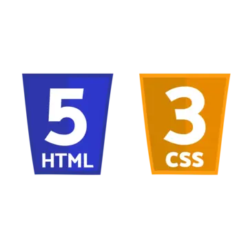

Projeto1 | Python
Um projeto de log-in com banco de dados integrado com Python e a lib SQLite3
Ver no GitHub

Projeto2 | HTML, CSS & Js
Um site de um laboratório de cientistas que mostra algumas invenções fictícias com foco no humor
Ver na Web